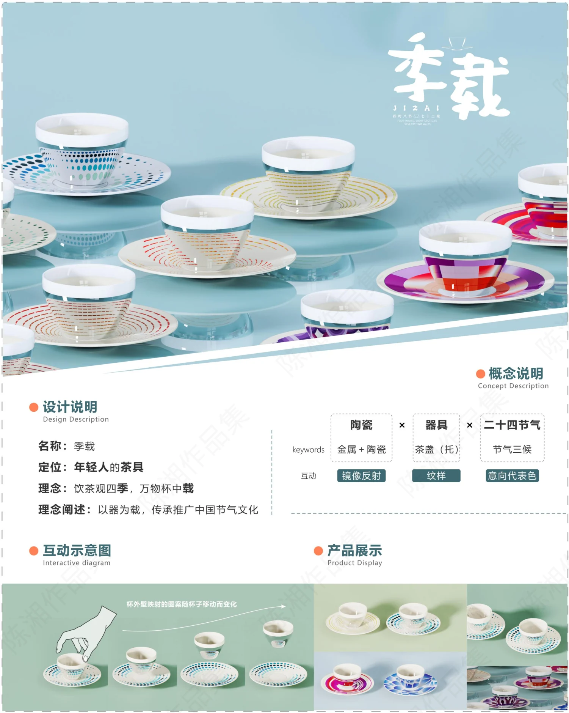
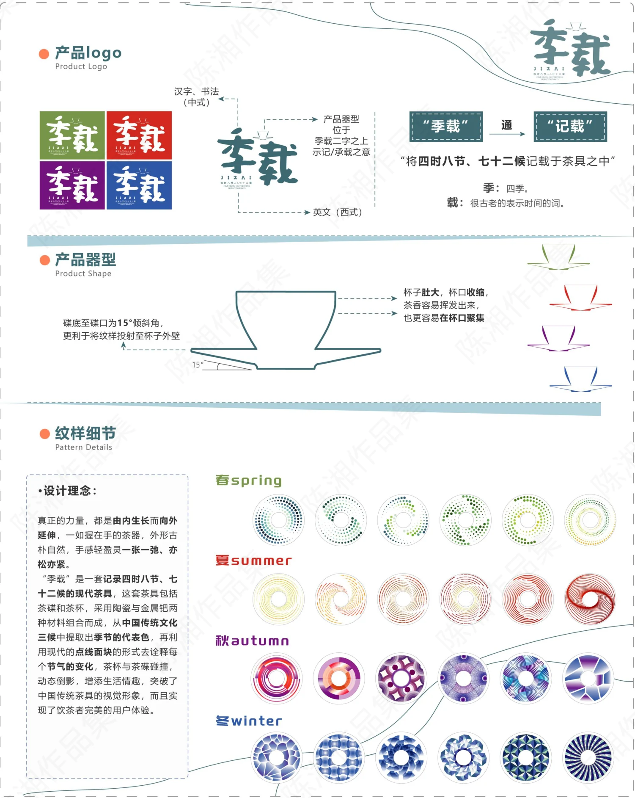
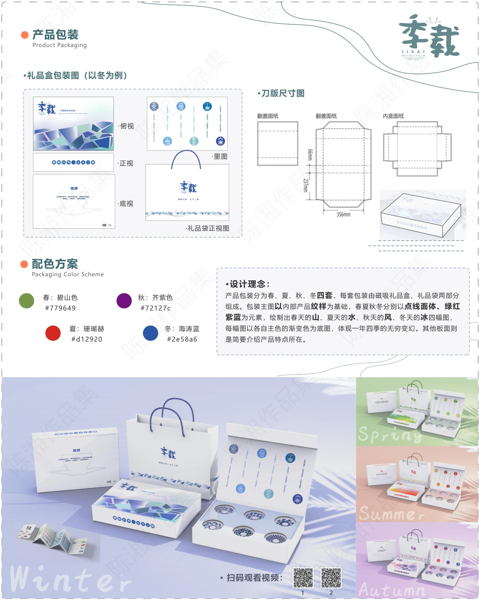

PROJECT 11 / JIZAI / SEASONAL TEAWARE
季载 · 二十四节气茶具
将四季与节气转化为杯碟纹样、配色和礼盒体验。

让节气进入饮茶日常
以二十四节气与四季为叙事，将茶杯、茶托及包装统一为“季载”系列，借日常器物表达时间与自然变化。
器形与纹样互动
方案结合杯口、器形、倾斜杯托与纹样反射关系，围绕春夏秋冬设计不同的图案、色彩与视觉节奏。
从品牌延展到礼盒
展板呈现标识、四季纹样、配色、包装展开图与礼盒效果，把产品视觉语言延伸到完整的赠礼体验。
PROCESS / 设计过程与展板
CLICK TO VIEW FULL SIZE以下为作品集中记录的设计方案与过程。图片可点击放大查看，保留原稿内容与水印。



内容来源：《陈湘作品集（展板）》第 6 页。未明确的项目时间、个人分工及落地结果未作推断。